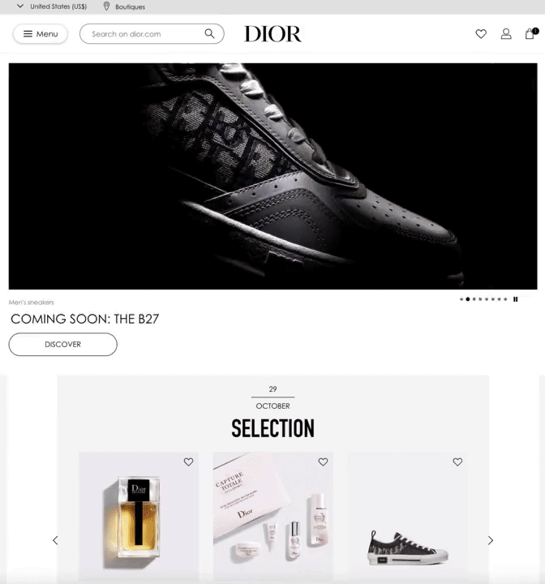
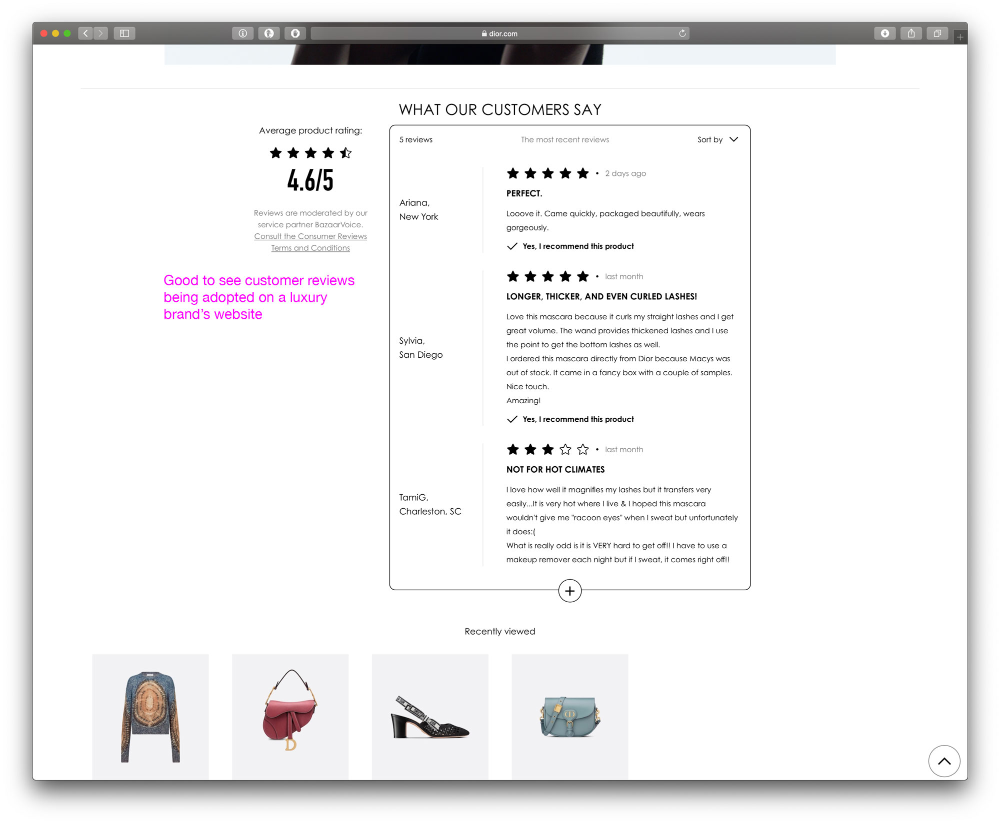
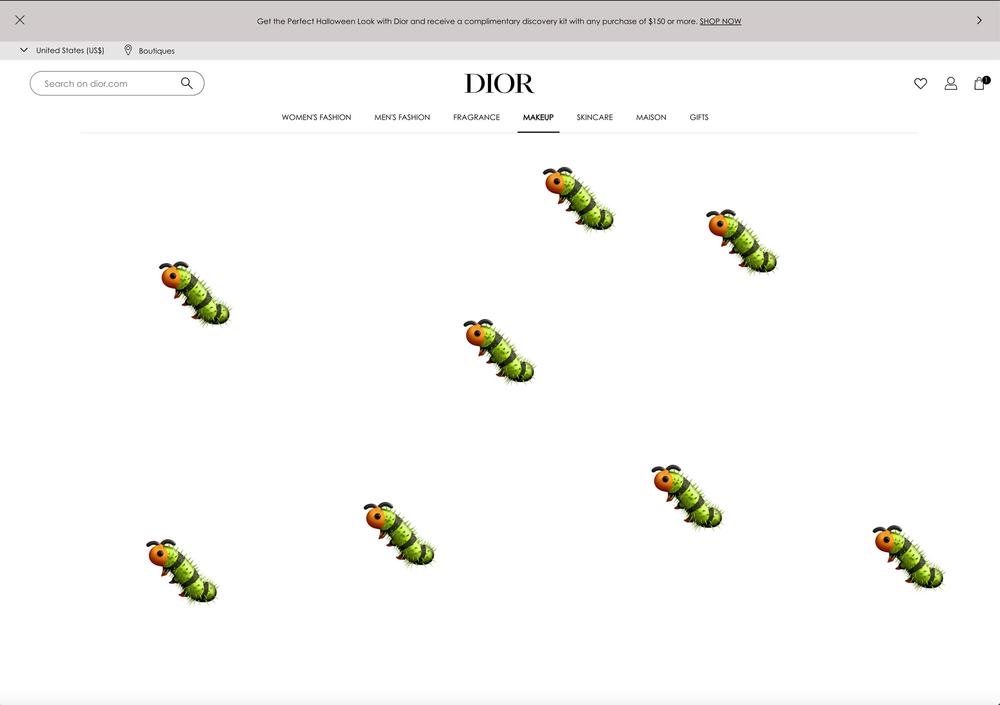

Blog posts
fashionweb review: DIOR.com
Miss "default template" Dior
We are continuing to review fashion websites, next up is Dior. Another big player that has been amongst the more reluctant to sell their luxury goods online, but they are waking up to the fact that The Times They Are A-Changin’.

Dior products have been too exclusive for E-commerce...until 2018
They only launched their e-commerce site in the US in 2018, then in Japan and China in 2019. Very very late.
They finally managed to hire a chief digital officer who rightfully said “It was a shame not to be present in one of the biggest markets for online luxury fashion before now [the US], but we had to make sure that the offer was right and the service perfect” bla bla, it is a shame for such a big brand to not have thought about e-commerce for such a long time and there is no excuse for that. However it’s good to see that they finally understand the importance of this and making changes to their digital strategy. Considering so many nations are going into second lockdown due to covid-19, all the luxury execs must regret for not investing in their e-commerce earlier while their retail stores on the Champs-Élysées are going to be closed and empty for the coming months. This is just another reminder that luxury has not set their priorities correctly between brick and mortar and the e-commerce before covid-19 happened and now we might see a few headless chicken running around.
What web design? Let’s just use the default template and add minimal styling?
Did Dior use a free website template for their website? Got inspiration from Shopify, Squarespace or Wix? It sure feels like it. The website completely fails to communicate the brand’s visual direction. We have no idea what the direction is judging by the visual elements we see on their website.
We notice the usual fashion visual elements present on every website: black call-to-action buttons, white and grey background, caps-lock text etc. but apart from these elements it looks like there are 10 developers and 1 designer working on the website, who decided to just change the colors of the buttons from the default template [of Salesforce Commerce Cloud] and leave the rest of the User Interface as it was, out of the box.
Multiple carousels are giving us a constant headache. Carousels have been popular once, but today they feel dated, very much 2013. It would be cool if they would actually gather their inspiration from the 2010s web, but we doubt this is the case here...
The products and the campaigns are top notch and high quality - but they get translated to the web quite low-res, so all that money was wasted and I see some low-res version on my retina screen, same issue as PRADA had in our previous review. We know that you need to save all those kilobytes on your images in order to make the site load faster, however when it comes to a luxury brand, you have to be very smart about this. Try to save smartly elsewhere and try to maximise the image resolution - as much as you can.
Monster navigation
The main navigation deserves their own section, since a lot of websites have this problem, adopted from Amazon, where there is a huge catalog.
Information architecture is super important. When we see a navigation like this, that is overloaded with options and different categories, we think that organising of the navigation has completely failed. As a customer, you don’t know where to start, so you would most likely go straight for search or randomly click somewhere. It’s too much. The navigation needs to be simpler and more organised.
WOW Customer reviews on a luxury site!
Finally a luxury brand that is not afraid to use and display product reviews - only for their make-up line though. It’s very brave to display this and we wonder if this will ever be adopted by big luxury brands, let’s say customers being able to review a $3000 handbag. We would definitely read those stories 🍿
Baby fashion? Uhm...
There is something weird about kids fashion and on model images of kids products. Of course some of the little ones might be interested in looking cool on street, but do we really need to include on model images of kids? Isn’t it enough to just display images of the garments? There is something very wrong about looking at luxury products shot on a 6-year-old child and it’s even worse from the brand that decides they want to produce and invest in this. We are definitely not fans of baby fashion...
Bugs 🐛
Just as a side note the website has weird bugs. As I click around with my latest version Chrome browser, I sometimes end up on a white page, that disappears when refreshing. Annoying bug that definitely needs attention.
On the plus➕ side
➕Dior has great product photography in a sense that you know that the item you are looking at online, it will look exactly like the product you receive. It's true to product.
➕ Perceived performance is pretty good on desktop! Mobile needs more attention as browsing is much slower there.
➕ We like the simplicity of the Checkout.
REVIEW TIME
LOOK AND FEEL: 👜 [1 out of 5 handbags]
We would love to see a distinct Dior web design with carefully designed user interfaces. Today their digital design reminds us of a default website template. Product photography is great, but unfortunately it doesn’t make up for the ugly UI used throughout the website.
WEB PERFORMANCE: 👜👜 [2 out of 5 handbags]
Considering the fact that Dior has only been doing E-commerce properly for the past 2-3 years, they seem to be pulling their weight. Poor web performance scores and annoying bugs need their undivided attention though. We recommend checking our Lighthouse scores regularly and using Browserstack to test all the modern browsers ;)
FASHIONWEB.IO's ARBITRARY FEELING: 👜👜 [2 out of 5 handbags]
Dior is one of the worst looking luxury fashion websites out there, considering the amazing and beautiful products they offer we feel they need to step up their game and invest into their e-commerce, instead of only investing in gifting to influencers.
Date: 2020. october 29.